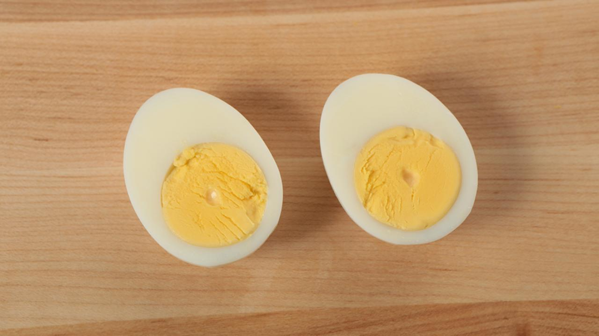

Hard Boiled Egg

Description
Hard boiled eggs are great food to have on hand as their uses are so versatile. Not only are they super delicious on their own, but they're great in sandwiches, chopped up on salads and the foundation for all devilled eggs. The trick to great hard boiled eggs is not over-cooking them, which can leave a grey ring around the yolk and make their texture a bit rubbery.
Ingredients
- A pot with a lid
- Eggs
- Water
Steps
- Place your eggs in a single layer on the bottom of your pot and cover with cold water. The water should be about an inch or so higher than the eggs. Cover the pot with a lid.
- Over high heat, bring your eggs to a rolling boil.
- Remove from heat and let stand in water for 10-12 minutes for large eggs. Reuce the slightly for smaller eggs, and increase the standing tie for extra-large-eggs.
- Drain water and rapidl run cold water over eggs until cooled. Rapid cooling helps prevent a green ring from forming around yolks.